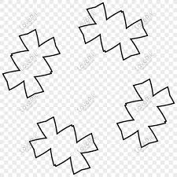

contoh penggunaan div yang warna pink.
contoh penggunaan span yang warna orange.
gunanya div dan span
gunanya div dan span untuk membungkus, mengelompokkan tag html dan memberikan informasi terhadap tag tersebut. dan dia tidak memiliki arti, kecuali diberi style dicss.
defnisi dari display inline.
- elemen html secara default tidak menambahkan baris baru ketika dibuat.
- lebar dan tinggi elemennya sebesar konten yang ada didalamnya.
- kita tidak dapat mengatur tinggi dan lebar dari elemen inline,kecuali tag html yang image saja.
- margin dan padding hanya mempengaruhi elemen secara horizontal,tidak vertikal.
ini adalah contoh display inline gambar.dan hanya tag html image saja yang bisa mengatur tinggi dan lebar dari elemen display inline.

dan ini adalah contoh dari display inline.
daftar link
link 1
link 2
link 3
link 4